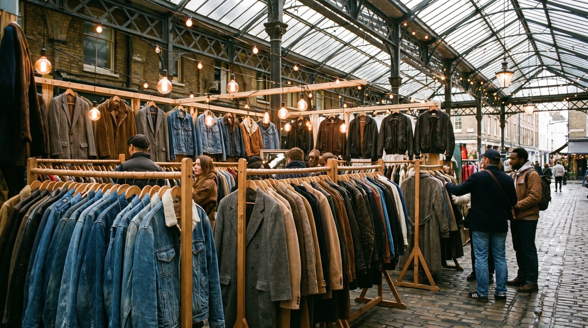
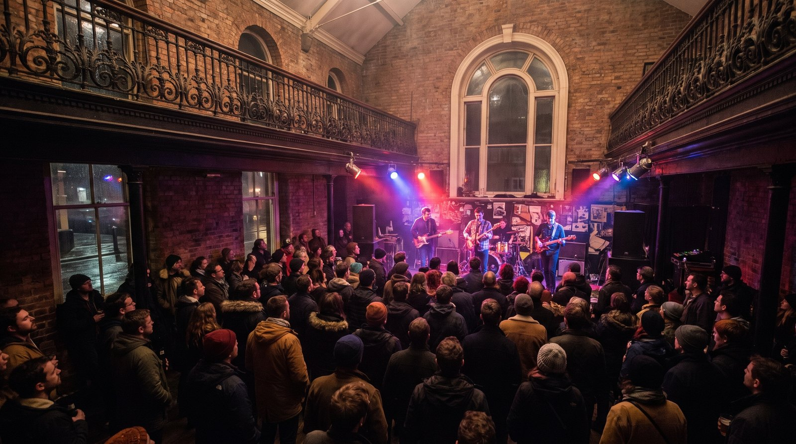
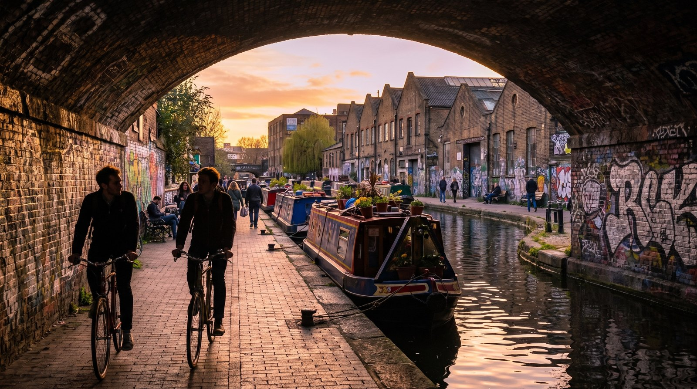
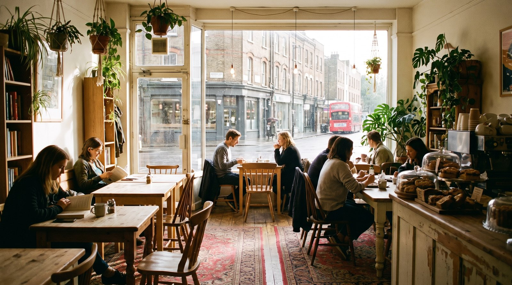

עודכן לאחרונה באוגוסט 2026
קמדן היא האזור שבו לונדון מפסיקה להתנהג יפה. חזיתות החנויות ברחוב הראשי מגדלות מהקיר נעל ענקית, דרקון וזוג מגפיים בגובה קומה, בתוך מתחם השווקים עוברים מאות אלפי אנשים בסוף שבוע, ומאתיים מטר משם מתחילה תעלה שקטה לגמרי שאפשר ללכת עליה עד גן החיות. שני הדברים האלה נמצאים באותו רבע שעה הליכה, וזה בדיוק מה שהופך את היום כאן למעניין.
בחרו כיוון וקבלו יום מוכן במתכנן, שאפשר לגרור, להחליף ולהוסיף עליו.
חמש שניות על תעלת ריג'נטס, במרחק דקה מהשוק. בלי קריינות, בלי מוזיקה.
מה הופך את קמדן לאזור כל כך מיוחד

ארבעה דברים נפגשים בקמדן בתוך רבע שעה הליכה, ואף אחד מהם לבדו לא היה מספיק כדי להצדיק נסיעה. יחד הם עושים אזור.
השווקים. מה שנקרא בפי כולם שוק קמדן הוא בעצם כמה מתחמים נפרדים שגדלו זה לצד זה לאורך השנים, וכל אחד מהם נראה ומרגיש אחרת. אפשר לעבור ביניהם ברגל בכמה דקות ולא להבין שעברת בין ארבעה מקומות שונים.
המוזיקה. ברדיוס של פחות מקילומטר יש כאן ארבעה אולמות הופעות פעילים, וזו צפיפות שקשה למצוא באזור אחר בלונדון. חלקם יושבים במבנים שנבנו במקור למשהו אחר לגמרי, ואחד מהם הוא סככת קטרים עגולה מהמאה התשע עשרה.
התעלה. תעלת ריג'נטס עוברת ממש בגב השוק. שני צעדים מהרעש מתחיל שביל הליכה שקט לאורך המים, שממשיך מערבה לכיוון ריג'נטס פארק וגן החיות. רוב המטיילים שמגיעים לקמדן לא יודעים שהוא שם.
האווירה האלטרנטיבית. קמדן מזוהה כבר עשרות שנים עם תרבות נגד, עם אופנה שלא נמצאת ברחוב הראשי, ועם קהל צעיר. זה מתבטא בחזיתות החנויות, בחנויות עצמן ובמוזיקה. אנחנו לא נכנסים כאן לוויכוח על מי התחיל מה ומתי, כי הרבה ממה שנכתב על זה ברשת הוא סיפור שחוזר על עצמו בלי מקור.
למי האזור הזה מתאים, ולמי פחות
ארבעה אולמות בטווח הליכה, ועוד פאבים עם חדר הופעות אחורי.
ריכוז הדוכנים בקמדן הוא מהגדולים בעיר, ובמחירים שפויים.
וינטג', בגדים משומרים וחנויות שלא תמצאו ברחוב הראשי.
התעלה מחברת את קמדן לריג'נטס פארק בהליכה אחת רציפה.
ולמי זה פחות מתאים. מי שמחפש שקט לא ימצא אותו בשוק, אבל כן ימצא אותו במרחק חמש דקות על התעלה. מי שמסתובב עם עגלה יגלה שהמעברים בין הדוכנים צרים ושבסוף שבוע קשה לעבור בהם. ומי שבא לראות את לונדון הקלאסית, הארמונות והבניינים הממשלתיים, לא ימצא כאן שום דבר מזה. זה בדיוק העניין. סדרת האזורים שלנו מכסה גם את הצד השני של העיר.
האווירה, ואיך היא משתנה לפי היום
אמצע השבוע
השוק פועל, אבל אפשר ללכת בקצב שלכם. הדוכנים פתוחים, המעברים נגישים, ואפשר לצלם בלי שיהיו עשרים אנשים בפריים. זה הזמן הטוב ביותר למי שבא לראות את המקום ולא רק לעבור בו.
סוף השבוע
קמדן במלוא הכוח, וגם בצפיפות המלאה שלה. שבת וראשון הם הימים שבהם השוק מגיע לשיא, האנרגיה גבוהה, וגם הזמן שלוקח לעבור מנקודה לנקודה מתארך משמעותית. אם באתם בשביל האווירה, זה הזמן. אם באתם בשביל לצלם או לקנות בנחת, פחות.
ערב
השוק נסגר בערך בשעה שבע, והאזור מחליף אופי. הפאבים והאולמות נפתחים, הקהל משתנה, והרחוב הראשי נשאר ער. זה כמעט אזור אחר.
🛍️ השווקים, ומה ההבדל ביניהם

הטעות הנפוצה ביותר של מטיילים בקמדן היא להניח שיש כאן שוק אחד. יש כמה, הם צמודים זה לזה, ורק מי שיודע מה ההבדל ביניהם מנצל את הזמן נכון.
המתחם המרכזי
החלק שרוב האנשים מדמיינים. מעברים בין קשתות לבנים, דוכני אוכל מכל העולם, חנויות קטנות ותכשיטים. זה גם החלק הצפוף ביותר, ולכן שווה להתחיל ממנו בבוקר ולא בצהריים.
שוק הסטייבלס
החלק הצפוני, ולדעתי הכי מעניין ויזואלית. הוא יושב בתוך אורוות סוסים ויקטוריאניות משוחזרות, עם תקרות מקומרות ורצפת אבן. כאן מרוכזים הווינטג' והרהיטים, וגם החנויות המוזרות באמת.
הולי וורף
החלק החדש של המתחם, שנפתח אחרי שריפה גדולה שפגעה בחלק הישן. הוא מקורה ברובו ויושב על גדת התעלה, עם אולמות אוכל וחנויות. זה גם המקום הכי נוח בקמדן לשבת בו.
שוק אינברנס סטריט
רחוב דוכנים קטן ליד תחנת קמדן טאון, פחות מתויר משאר המתחם. מי שהולך ברגל מהתחנה עובר בו ממילא.
🎵 המוזיקה, ולמה קמדן מזוהה איתה

הצפיפות של אולמות ההופעות כאן היא לא צירוף מקרים, אבל היא גם לא סיפור שאפשר לספר בכמה מילים בלי לפשט אותו. מה שכן אפשר לומר בוודאות: בטווח הליכה של פחות מקילומטר יש ארבעה אולמות פעילים בגדלים שונים, וזה מצב נדיר בלונדון.
הראונדהאוס
המבנה המרשים מביניהם. סככת קטרים עגולה מהמאה התשע עשרה, שהוסבה לאולם מופעים. גם מי שלא מגיע להופעה שווה לו לעבור לידו ולראות את החוץ.
קוקו
אולם בבניין תיאטרון היסטורי, בקצה הדרומי של הרחוב הראשי. שופץ ונפתח מחדש, והוא היום אחד המקומות היפים בעיר לראות בו הופעה.
ג'אז קפה
אולם קטן ואינטימי, עם תוכנית שחורגת הרבה מעבר לג'אז. הקהל עומד קרוב לבמה וזו חוויה אחרת לגמרי מאולם גדול.
אלקטריק בולרום
על הרחוב הראשי ממש. בערבים אולם הופעות ומועדון, ובחלק מסופי השבוע הוא פועל דווקא כשוק. שני שימושים לאותו מבנה.
🚶 התעלה, ההליכה שרוב המטיילים מפספסים

זה החלק שהופך יום בקמדן ליום שלם במקום לשעתיים בשוק. תעלת ריג'נטס עוברת ממש בגב המתחם, ומשם יוצא שביל הליכה רציף לאורך המים.
ההליכה מערבה לוקחת בערך ארבעים דקות עד לקצה של ריג'נטס פארק, והיא עוברת לצד גן החיות, שחלק ממנו נראה מהשביל. אין מדרגות בדרך, אין צמתים, ואין רעש. אפשר גם ללכת מזרחה לכיוון קינגס קרוס, וזו הליכה של בערך אותו זמן באופי אחר לגמרי, יותר עירונית ופחות ירוקה.
מי שלא רוצה ללכת יכול לעשות את אותו קטע בסירה. יש שירות שיט שיוצא מקמדן לוק ונוסע מערבה, והוא נכנס לאותם נופים בלי המאמץ.
🍴 איפה אוכלים

האוכל בקמדן מתחלק לשניים, וכדאי לדעת מראש מה מחפשים.
דוכני השוק הם הסיפור המרכזי. ריכוז אוכל רחוב מכל העולם, מנות בין שבע לשתים עשרה ליש"ט בערך, ואפשר לאכול בעמידה או למצוא מקום ישיבה בחלק המקורה. זו הדרך הזולה והמהירה, והיא גם חלק מהחוויה.
מקומות עם זהות נמצאים מסביב. פיש אנד צ'יפס בסגנון שנות החמישים, גלידה שמוכנה במקום בחנקן נוזלי ליד הגשר, ובתי קפה עצמאיים ברחובות הצדדיים. אלה מקומות שיושבים בהם ולא רק אוכלים בהם.
ומי שרוצה ארוחת ערב אמיתית עדיף שיצא מקמדן עצמה מערבה לכיוון פריטרוז היל. שם הרחובות שקטים, ויש כמה מסעדות ותיקות שפועלות עשרות שנים.
👨👩👧 קמדן עם ילדים
קמדן עובדת מצוין עם ילדים, אבל לא בהכרח בחלק שחשבתם. השוק עצמו הוא לא המקום הכי נוח למשפחות, ודווקא מה שמסביבו הוא יום מצוין.
- התעלה היא ההפתעה. שביל שטוח בלי מדרגות ובלי כבישים, עם סירות צבעוניות, ברווזים ומנעולי מים שאפשר לראות פועלים.
- גן החיות יושב ממש על אותה תעלה, בהליכה מהשוק. זו אטרקציה ליום שלם בפני עצמה.
- ריג'נטס פארק ממשיך משם, עם מגרשי משחקים ושטח פתוח ענק.
- פריטרוז היל היא גבעה נמוכה שילדים עולים עליה בקלות, והנוף מלמעלה עושה רושם.
🌙 קמדן בערב
בשעה שבע בערך השוק נסגר, והאזור מחליף אופי לגמרי. מי שנשאר מגלה קמדן אחרת: פחות תיירים, יותר מקומיים, והרחוב הראשי נשאר מואר ופעיל.
הפאבים כאן הם חלק מהעניין. יש כמה פאבים ותיקים באזור שמקיימים ערבי מוזיקה בחדר האחורי, ואחרים עם גינה גדולה שמתמלאת בערבי קיץ. זה לא אזור של ברים יוקרתיים אלא של פאבים שכונתיים, וזה בדיוק היתרון שלו.
ומי שרוצה לשלב, הופעה באחד האולמות בשעה שמונה ואחריה פאב במרחק חמש דקות היא ערב שלם שלא דורש שום נסיעה באמצע.
יום שהולך לכיוון אחד בלבד, מהשוק מערבה אל התעלה ואל הגבעה. בלי חזרות ובלי נסיעות באמצע. לחיצה אחת מכניסה את כולו למסלול שלכם.
היום נוסף למסלול שלכם ואפשר להמשיך לגלוש. אם כבר בניתם מסלול קודם, הוא לא יימחק.
- 10:00שוק קמדןמתחילים כשהוא נפתח, לפני שהמעברים מתמלאים
- 11:15שוק הסטייבלסהאורוות הוויקטוריאניות, החלק הכי מיוחד במתחם
- 12:30פופיז קמדןפיש אנד צ'יפס לצהריים, במקום עם אופי
- 13:30גשר קמדן לוקנקודת הציון המצולמת, וגם המעבר אל התעלה
- 14:00טיילת תעלת ריג'נטסההליכה מערבה, שקטה לגמרי ועוברת ליד גן החיות
- 15:30פריטרוז הילהנוף על קו הרקיע, בסוף ההליכה ולא בהתחלה
- 17:00למוניהארוחת ערב ברחוב השקט, דקות מהגבעה
פירוט מלא של היום, שעה אחר שעה
| שעה | איפה | מה עושים |
|---|---|---|
| 10:00 | שוק קמדן | מתחילים במתחם המרכזי כשהוא נפתח. סיבוב בין הקשתות, דוכני האוכל והחנויות, לפני שהמעברים מתמלאים. |
| 11:15 | שוק הסטייבלס | ממשיכים צפונה ברגל אל האורוות המשוחזרות. וינטג', רהיטים והחנויות המוזרות באמת. |
| 12:30 | פופיז קמדן | פיש אנד צ'יפס בסגנון שנות החמישים. עצירת צהריים במקום עם זהות ולא עוד דוכן. |
| 13:30 | גשר קמדן לוק | גשר הברזל מעל התעלה. עוצרים לצילום, ומכאן יורדים לשביל. |
| 14:00 | טיילת תעלת ריג'נטס | ההליכה המערבה, בערך ארבעים דקות. עוברת לצד גן החיות, בלי מדרגות ובלי צמתים. |
| 15:30 | פריטרוז היל | עולים על הגבעה. הנוף על קו הרקיע, ומשם רואים את כל המסלול שעשיתם. |
| 17:00 | למוניה | יורדים לרחוב ריג'נטס פארק רוד. מסעדה יוונית ותיקה, וסוגרים את היום בצד השקט של קמדן. |
🚇 איך מגיעים ומה משלבים עם קמדן
קמדן יושבת באזור תחבורה 2, כלומר הנסיעה אליה עולה מעט יותר מנסיעה במרכז אבל עדיין נכללת בתעריף היומי המקסימלי. יש שלוש תחנות רלוונטיות, וההבדל ביניהן משנה:
- Camden Town, על הקו השחור. התחנה הקרובה ביותר לשוק, בערך שלוש דקות הליכה. גם העמוסה ביותר.
- Chalk Farm, על אותו קו, תחנה אחת צפונה. קרובה יותר לשוק הסטייבלס ולראונדהאוס, והרבה פחות עמוסה.
- Mornington Crescent, תחנה אחת דרומה. הרחוקה ביותר מהשוק אבל השקטה ביותר, ומי שמגיע ממרכז העיר יכול לרדת בה וללכת צפונה לאורך הרחוב הראשי.
מה משלבים עם קמדן באותו יום
- ריג'נטס פארק וגן החיות, בהליכה לאורך התעלה. השילוב הטבעי ביותר, ובלי לעלות על שום קו.
- פריטרוז היל, בקצה המערבי של אותה הליכה. אפשר לסיים בו את היום.
- קינגס קרוס, שתי תחנות דרומה או הליכה מזרחה לאורך התעלה. אזור שונה לגמרי באופיו, עם כיכר מודרנית ומחסנים משופצים.
🔗 איך קמדן משתלבת בטיול שלכם
קמדן היא לא יעד ליום הראשון בלונדון. ביום הראשון רוב האנשים רוצים לראות את מה שבגללו באו, ואת זה אין כאן. היא גם לא יעד ליום האחרון, כי היא דורשת רגליים.
היא עובדת הכי טוב באמצע הטיול, בדיוק כמו שורדיץ', אבל מסיבה אחרת. שורדיץ' היא לונדון אחרת, וקמדן היא לונדון שמאפשרת לנשום. יום אחד של שוק, הליכה על מים ונוף מגבעה הוא בדיוק מה שצריך אחרי יומיים של מוזיאונים ותורים.
- בטיול של שלושה ימים, קמדן נכנסת כחצי יום, בבוקר, ואחריה ריג'נטס פארק אחר הצהריים.
- בטיול של חמישה ימים, היא ראויה ליום שלם עם התעלה, גן החיות ופריטרוז היל.
- בטיול עם ילדים, זה אחד הימים הכי קלים לתכנן, כי הכל מחובר בהליכה אחת בלי כבישים.
שאלות שחוזרות על עצמן
כמה זמן צריך בקמדן?
שלוש עד ארבע שעות מכסות את השווקים ואת הסביבה הקרובה. מי שמוסיף את ההליכה לאורך התעלה ואת פריטרוז היל ימלא יום שלם.
מתי הכי כדאי להגיע?
השוק פתוח כל השבוע, ולכן ההבדל הוא בצפיפות ולא בזמינות. אמצע השבוע נעים ואפשר לצלם, סוף השבוע מלא באנרגיה אבל צפוף מאוד. אם אתם מגיעים בסוף שבוע, בואו לפני אחת עשרה.
האם קמדן מתאימה למשפחות?
התעלה, גן החיות ופריטרוז היל הם יום מצוין לילדים. השוק עצמו צר וצפוף בסופי שבוע ופחות נוח עם עגלה, ולכן עדיף להגיע אליו בבוקר או באמצע השבוע.
האם השוק פתוח בימי ראשון?
כן. השווקים בקמדן פועלים כל ימות השבוע כולל ראשון, וזה ההבדל הגדול ביניהם לבין שווקים אחרים בעיר שפועלים בימים מסוימים בלבד. ראשון הוא גם היום העמוס ביותר.
כמה זה עולה?
הכניסה לכל חלקי השוק, ההליכה על התעלה והעלייה לפריטרוז היל הן בחינם. ההוצאה היחידה היא אוכל וקניות, ואם רוצים גם גן החיות, שהוא בתשלום.
איך משלבים את קמדן עם אזור אחר?
הכי טבעי הוא להמשיך מערבה לאורך התעלה אל ריג'נטס פארק וגן החיות, בלי לעלות על שום קו. אפשרות שנייה היא קינגס קרוס, שתי תחנות דרומה או הליכה מזרחה על אותה תעלה.